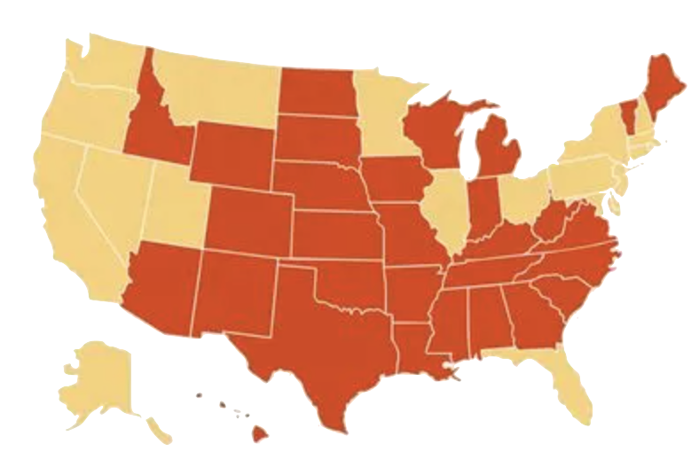

Across the United States, as of 2022, 33 of the 50 states implement a tampon tax.
That is the amount of money a women has to spend on average on menstrual products, yearly, due to this tampon tax. This disproportionately affects women living in impoverished conditions, causing a period poverty. What is considered to be "unessential products" are actually essential to allow women to participate in daily activities, like their male counterparts. Without equitable access to these products, active participation of women in these activities proves to be fatal. The effect of the tampon tax reduces the opportunities underpriveleged women have within their communities.
Check out our donate page to find a location near you where you can donate free period products! Reference this website to your friends to help spread the information ♡